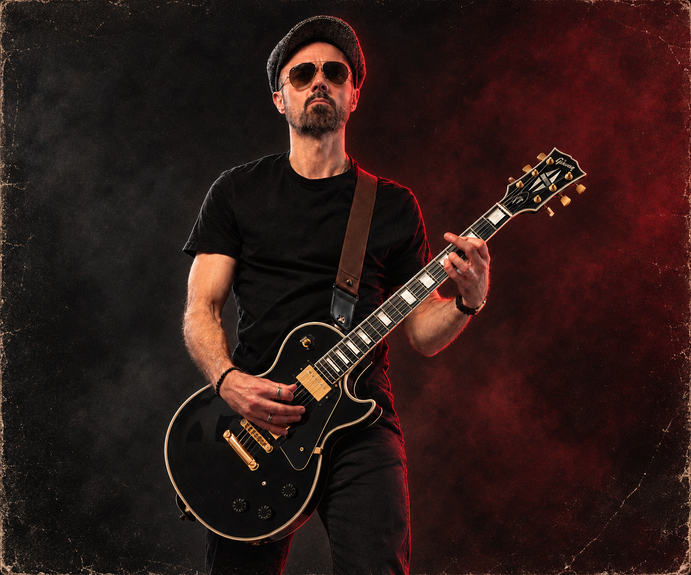

Original music & soundGet in touch ↗

Johnny E
Musician · Composer · Sound Designer
Music and sound for the space in between.
I’m Johnny E, a musician, composer and sound designer based in Finland. I sing, play guitar and write music, both on my own and in bands. Rock and metal are a big part of that, but I’ve always enjoyed exploring other sounds and styles.
I’ve composed and produced music for film, animation and games, and worked across recording, mixing, live sound and audiovisual events. My sound design experience includes both creating sounds and getting them working in interactive projects, using tools such as Wwise and FMOD.
I work at Neural DSP, where I’ve spent over six years in product testing, quality control and technical support, helping musicians with their hardware and software. Before that, I worked in music licensing at APRA AMCOS in Australia. I hold an MA in Sound in New Media from Aalto University. I enjoy the technical side of audio as much as the creative side, especially when solving a problem gives me a new musical idea.